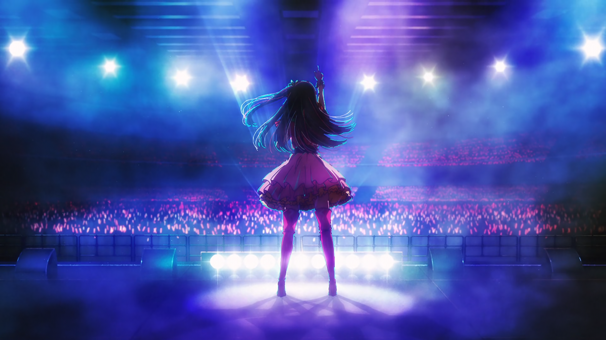
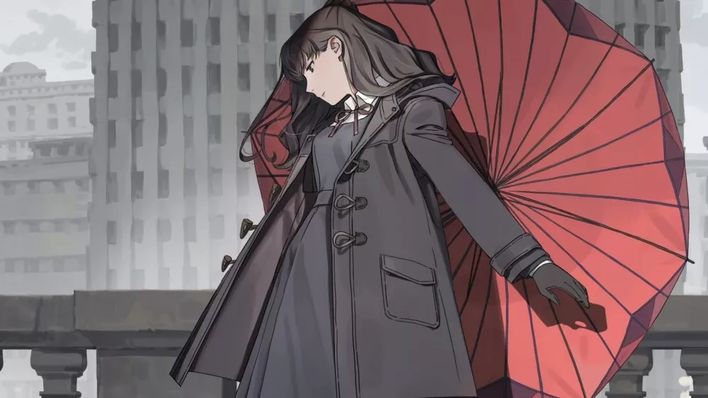
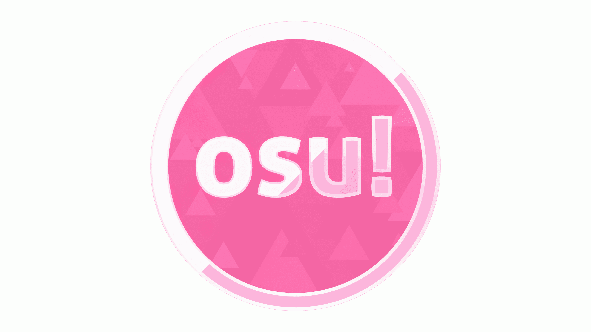
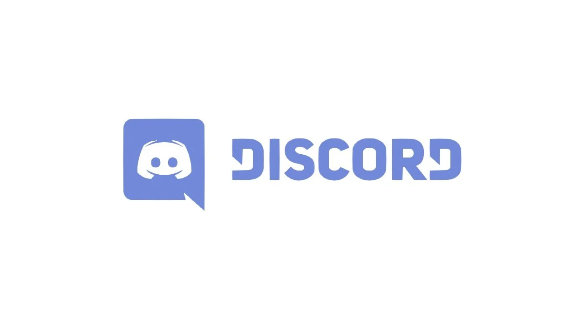

MON PORTRAIT CHINOIS
Kimkongrath Thomas
Si j'étais un film
Je serais le film d'animation japonais Fate Stay Night/Heaven's Feel
III comme le
long-métrage
qui a
suscité
en moi les émotions les plus intenses de ma vie lors de sa projection en salle. Cette
trilogie
cinématographique m'a profondément marqué, et je ne pourrai jamais l'oublier. À mes yeux, il
demeure mon
film préféré.

Si j'étais un manga
Je serais Oshi no Ko car il a captivé mon intérêt, notamment parce que je suivais assidûment ses
chapitres
chaque semaine. Au fur et à mesure que l'histoire progressait, je découvrais des aspects de certains
personnages auxquels je pouvais m'identifier, établissant ainsi un lien profond avec ce manga. En
abordant
des thèmes variés tels que le monde du spectacle et d'autres sujets sensibles, cette œuvre a suscité en
moi
un intérêt particulier. Ayant exploré de nombreux mangas au fil de ma vie, rares sont ceux qui
parviennent à
laisser une empreinte aussi marquante en moi.

Si j'étais un instrument
Je serais un piano, car c'est un instrument que j'ai toujours rêvé de maîtriser. Le piano occupe une
place
particulière parmi mes instruments préférés, car il a le pouvoir de transmettre une multitude d'émotions
rien qu'en écoutant quelques notes.
Si j'étais une musique
Je serais la chanson "Fleurissant dans la boue" de Wolpis Carter. Cette musique a laissé une empreinte
indélébile en moi dès la première écoute, suscitant des émotions profondes. Même à l'heure actuelle,
elle
demeure inoubliable. Ce qui la rend particulièrement spéciale, c'est la voix de la chanteuse, qui a le
pouvoir de communiquer tout ce que je recherche lors de l'écoute d'une mélodie. Peu importe que je ne
comprenne pas la langue, l'essentiel est que je ressente des émotions, et cette chanson parvient à créer
ces
moments précieux pour moi.

Si j'étais un jeu
Je serais le jeu Osu!. J'ai découvert ce jeu grâce à mon cousin lorsque j'étais très jeune, et même après
cette première expérience, le nom du jeu est resté gravé dans ma mémoire. Cependant, il a fallu attendre
l'obtention d'un ordinateur personnel au lycée pour que je puisse enfin y jouer officiellement. Osu! est
ainsi devenu un souvenir persistant, attendant patiemment dans ma mémoire pendant toutes ces années,
jusqu'à
ce que je puisse enfin explorer pleinement ce jeu qui a captivé mon attention depuis tant d'années.

Si j'étais un personnage
Je serais Vayne un personnage du jeu vidéo League of Legends. Initialement, Vayne suscitait en moi une
profonde nervosité lors de mes débuts dans le jeu. Je me souviens d'une partie où mon adversaire jouait
Vayne, et la fin de cette rencontre cela m'a laissé un sentiment d'impuissance et de désespoir. Les
compétences du personnage et la manière dont cet adversaire m'a éliminé ont créé un souvenir
traumatisant,
resté gravé dans ma mémoire. À partir de ce moment, j'ai décidé de me consacrer exclusivement à Vayne,
le
seul personnage avec lequel je me sentais à l'aise et confiant lorsque je la jouais, même face à un
choix de
plus de 162 champions jouables. Après des centaines d'heures passées à jouer Vayne sur la Faille de
l'invocateur, je me suis plongé dans l'histoire de ce personnage et découvert son passé tragique, qui
m'a
profondément touché. C'est ainsi que Vayne est devenue bien plus qu'un simple personnage de jeu vidéo
pour
moi.

Si j'étais une application
Je serais Discord, car c'est sans aucun doute l'endroit où je passe le plus de temps dans ma vie. Des
heures
incalculables sont dédiées à cette plateforme, notamment après les cours, où je m'y connecte pour des
appels
avec mes amis. Discord est devenu l'endroit où je vis des moments particulièrement agréables chaque
jour, me
permettant de m'évader du monde extérieur et des devoirs. Cependant, cette application qui était
autrefois
un refuge est devenue une source de rappels lorsque mes notifications Discord ont commencé à se
transformer en rappels de devoirs à rendre...
